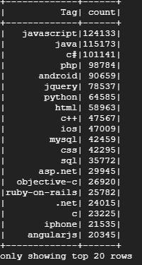

StackOverFlow Q&A Analysis
A job for the Cloud and Big Data subject at the Faculty of Informatics, Complutunse University of Madrid>
Our decision
Since we are students of university degrees related to programming, we have decided to do a study on the StackOverFLow website which is a tool that we use every day to solve our doubts.

Our datasets
We found three datasets, one for the 10% of all questions made in StackoverFlow website, one for the answers of those questions and finally one of the tags that people use. YOu cand find the datasets in this link
Our Scripts
Least Responded Tags We found it interesting to see which tags were repeated the most in unanswered or unfinished questions, so we did a script to count these tags.
Most Used Tags We have also made a script to see which Tags have been the most used
Get in touch
Our Team